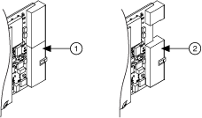

为了将 PCI Express 信号整合到 PXI 中，PXI 系统联盟 ( pxisa.org ) 定义了对 PXI 模块的修改。在改进的 PXI 模块（称为混合插槽兼容 PXI 模块）上，顶部后连接器被较小的连接器所取代。
混合插槽兼容 PXI 模块保留以下特性：
|
注 请参阅您的 NI PXI/PXI Express 机箱文档以确定哪些插槽是 PXI 插槽、PXI Express 插槽或 PXI Express 混合插槽。 |
下图显示了 PXI 模块和混合插槽兼容 PXI 模块的比较。
 |
|
| 1 个 PXI 模块 | 2 混合插槽兼容 PXI 模块 |
 提交有关此主题的反馈。
提交有关此主题的反馈。 访问ni.com/support以获得技术支持。
访问ni.com/support以获得技术支持。